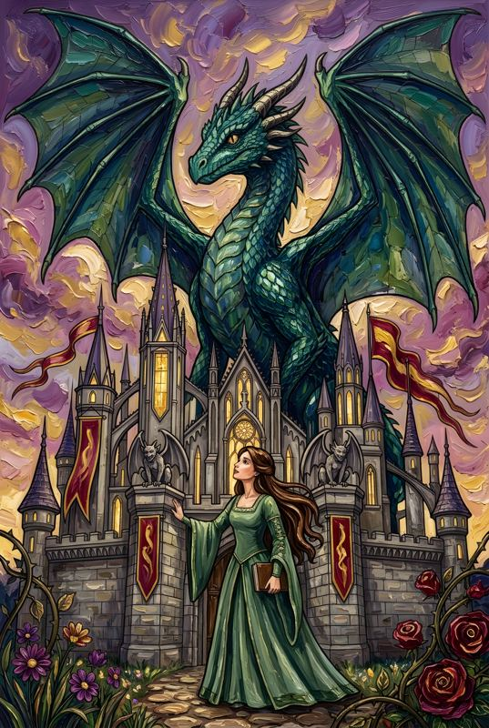

The first book from Coloring Worlds
Kingdoms of ColorThe Dragon of Thornfield
In developmentIn the kingdom of Thornfield, a dragon stirs beneath the ancient mountain. Elara's story is being drawn, written, and colored right now, one page at a time.
This page is getting ready
There's more to share soon. If you'd like to hear the moment the book opens, send a note that says "Add me" to this address.
coloringworlds@coloringworlds.network